原文连接:https://www.cnblogs.com/changxin7/p/11511738.html
前戏
到目前为止，我们已经学过了JavaScript的一些简单的语法。但是这些简单的语法，并没有和浏览器有任何交互。
也就是我们还不能制作一些我们经常看到的网页的一些交互，我们需要继续学习BOM和DOM相关知识。
JavaScript分为 ECMAScript，DOM，BOM。
BOM（Browser Object Model）是指浏览器对象模型，它使 JavaScript 有能力与浏览器进行“对话”。
DOM （Document Object Model）是指文档对象模型，通过它，可以访问HTML文档的所有元素。
Window对象是客户端JavaScript最高层对象之一，由于window对象是其它大部分对象的共同祖先，在调用window对象的方法和属性时，可以省略window对象的引用。例如：window.document.write()可以简写成：document.write()。
BOM
window对象
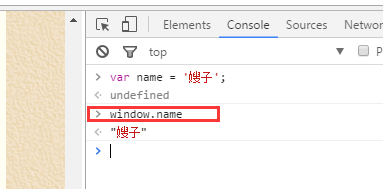
看上面的例子你会发现，name直接封装到了window对象上，了解一下就可以了。
所有浏览器都支持 window 对象。它表示浏览器窗口。
**如果文档包含框架（frame 或 iframe 标签），浏览器会为 HTML 文档创建一个 window 对象，并为每个框架创建一个额外的 window 对象（了解）。*
**没有应用于 window 对象的公开标准，不过所有浏览器都支持该对象（了解）。*
所有 JavaScript 全局对象、函数以及变量均自动成为 window 对象的成员。
全局变量是 window 对象的属性。全局函数是 window 对象的方法。
接下来要讲的HTML DOM 的 document 也是 window 对象的属性之一。
一些常用的Window方法：（在浏览器调试器的console里面输入下面这些属性或者方法，就能看到对应的效果）
- window.innerHeight - 浏览器窗口的内部高度
- window.innerWidth - 浏览器窗口的内部宽度
- window.open() - 打开新窗口
- window.close() - 关闭当前窗口 (只能关闭用js的window.open()打开的页面，了解一下就行了)
window的子对象
navigator对象（了解即可）
浏览器对象，通过这个对象可以判定用户所使用的浏览器，包含了浏览器相关信息。
navigator.appName // Web浏览器全称
navigator.appVersion // Web浏览器厂商和版本的详细字符串
navigator.userAgent // 客户端绝大部分信息
navigator.platform // 浏览器运行所在的操作系统看示例：
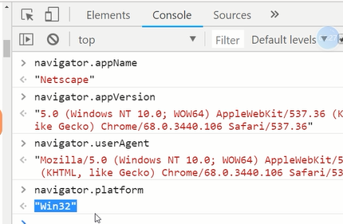
screen对象（了解即可）
屏幕对象，不常用。
一些属性：
- screen.availWidth - 可用的屏幕宽度
- screen.availHeight - 可用的屏幕高度
history对象（了解即可）
window.history 对象包含浏览器的历史。
浏览历史对象，包含了用户对当前页面的浏览历史，但我们无法查看具体的地址，可以简单的用来前进或后退一个页面。
history.forward() // 前进一页，其实也是window的属性，window.history.forward()
history.back() // 后退一页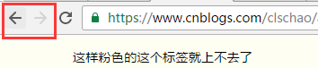
location对象
window.location 对象用于获得当前页面的地址 (URL)，并把浏览器重定向到新的页面。
常用属性和方法：
location.href 获取URL
location.href="URL" // 跳转到指定页面
location.reload() 重新加载页面,就是刷新一下页面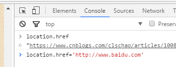
上面的内容需要大家记住的是：
1.window对象
2.window的子对象：location的那几个属性和方法
3.其他的作为了解
我们下面来学些比较有意思有用的内容：
弹出框
可以在 JavaScript 中创建三种消息框：警告框、确认框、提示框。
警告框
警告框经常用于确保用户可以得到某些信息。
当警告框出现后，用户需要点击确定按钮才能继续进行操作。
语法：
alert("你看到了吗？");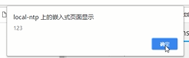
确认框（了解即可）
确认框用于使用户可以验证或者接受某些信息。
当确认框出现后，用户需要点击确定或者取消按钮才能继续进行操作。
如果用户点击确认，那么返回值为 true。如果用户点击取消，那么返回值为 false。
语法：
confirm("你确定吗？")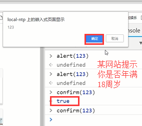
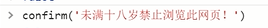
我们可以根据返回的true和false来判断一下，然后根据这个值来使用location去跳转对应的网站。
提示框（了解即可）
提示框经常用于提示用户在进入页面前输入某个值。
当提示框出现后，用户需要输入某个值，然后点击确认或取消按钮才能继续操纵。
如果用户点击确认，那么返回值为输入的值。如果用户点击取消，那么返回值为默认值，就是第二个参数，如果没有默认值那么返回null。
语法：
prompt("请在下方输入","你的答案")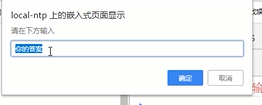
可以通过用户输入的内容来判断我们怎么去进行后面的操作
除了那个警告框（用的也不都），其他的都很少用，比较丑陋，了解一下就行
计时相关（比较重要）
通过使用 JavaScript，我们可以在一定时间间隔之后来执行代码，而不是在函数被调用后立即执行。我们称之为计时事件。
setTimeout() 一段时间后做一些事情
语法：
var t=setTimeout("JS语句",毫秒) 第一个参数js语句多数是写一个函数，不然一般的js语句到这里就直接执行了，先用函数封装一下，返回值t其实就是一个id值（浏览器给你自动分配的）setTimeout() 方法会返回某个值。在上面的语句中，值被储存在名为 t 的变量中。假如你希望取消这个 setTimeout()，你可以使用这个变量名来指定它。
setTimeout() 的第一个参数是含有 JavaScript 语句的字符串。这个语句可能诸如 "alert('5 seconds!')"，或者对函数的调用，诸如 alertMsg()"。
第二个参数指示从当前起多少毫秒后执行第一个参数（1000 毫秒等于一秒）。
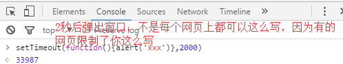
clearTimeout()
语法：
clearTimeout(setTimeout_variable)举个例子：
// 在指定时间之后执行一次相应函数
var timer = setTimeout(function(){alert(123);}, 3000)
// 取消setTimeout设置
clearTimeout(timer);setInterval() 每隔一段时间做一些事情
setInterval() 方法可按照指定的周期（以毫秒计）来调用函数或计算表达式。
setInterval() 方法会不停地调用函数，直到 clearInterval() 被调用或窗口被关闭。由 setInterval() 返回的 ID 值可用作 clearInterval() 方法的参数。
语法：
setInterval("JS语句",时间间隔)返回值
一个可以传递给 Window.clearInterval() 从而取消对 code 的周期性执行的值。
clearInterval()
clearInterval() 方法可取消由 setInterval() 设置的 timeout。
clearInterval() 方法的参数必须是由 setInterval() 返回的 ID 值。
语法：
clearInterval(setinterval返回的ID值)举个例子：
// 每隔一段时间就执行一次相应函数
var timer = setInterval(function(){console.log(123);}, 3000)
// 取消setInterval设置
clearInterval(timer);
DOM
DOM（Document Object Model）是一套对文档的内容进行抽象和概念化的方法。
当网页被加载时，浏览器会创建页面的文档对象模型（Document Object Model）。
HTML DOM 模型被构造为对象的树。
HTML DOM 树

DOM标准规定HTML文档中的每个成分都是一个节点(node)：
- 文档节点(document对象)：代表整个文档
- 元素节点(element 对象)：代表一个元素（标签）
- 文本节点(text对象)：代表元素（标签）中的文本
- 属性节点(attribute对象)：代表一个属性，元素（标签）才有属性
- 注释是注释节点(comment对象)
JavaScript 可以通过DOM创建动态的 HTML：
- JavaScript 能够改变页面中的所有 HTML 元素
- JavaScript 能够改变页面中的所有 HTML 属性
- JavaScript 能够改变页面中的所有 CSS 样式
- JavaScript 能够对页面中的所有事件做出反应（鼠标点击事件，鼠标移动事件等）
查找标签（和css一样，你想操作某个标签需要先找到它）
直接查找
document.getElementById 根据ID获取一个标签
document.getElementsByClassName 根据class属性获取（可以获取多个元素，所以返回的是一个数组）
document.getElementsByTagName 根据标签名获取标签合集例子：
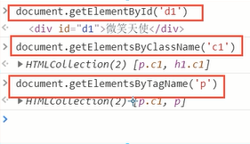
间接查找
parentElement 父节点标签元素
children 所有子标签
firstElementChild 第一个子标签元素
lastElementChild 最后一个子标签元素
nextElementSibling 下一个兄弟标签元素
previousElementSibling 上一个兄弟标签元素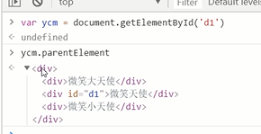
如果查找出来的内容是个数组，那么就可以通过索引来取对应的标签对象
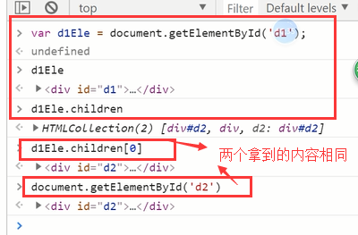
上面说的这些查找标签的方法，以后我们很少用，等学了JQuery，会有很好用、更全的查找标签的功能，上面这些大家简单练习一下，有个了解就行了。
节点操作
创建节点（就是创建标签）
语法：
createElement(标签名)
示例：
var divEle = document.createElement("div");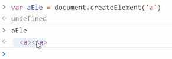
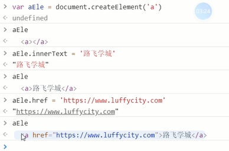
添加节点
语法：
追加一个子节点（作为最后的子节点）
somenode.appendChild(newnode)；
把增加的节点放到某个节点的前边。
somenode.insertBefore(newnode,某个节点);
示例：
var imgEle=document.createElement("img");
imgEle.setAttribute("src", "http://image11.m1905.cn/uploadfile/s2010/0205/20100205083613178.jpg");
var d1Ele = document.getElementById("d1");
d1Ele.appendChild(imgEle);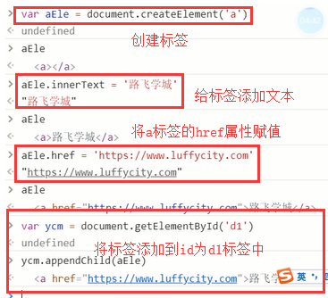
删除节点
语法：
获得要删除的元素，通过父元素调用该方法删除。
somenode.removeChild(要删除的节点)
替换节点
语法：
somenode.replaceChild(newnode, 某个节点);
somenode是父级标签，然后找到这个父标签里面的要被替换的子标签，然后用新的标签将该子标签替换掉
属性节点
获取文本节点的值：
var divEle = document.getElementById("d1")
divEle.innerText #输入这个指令，一执行就能获取该标签和内部所有标签的文本内容
divEle.innerHTML #获取的是该标签内的所有内容，包括文本和标签
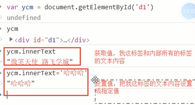
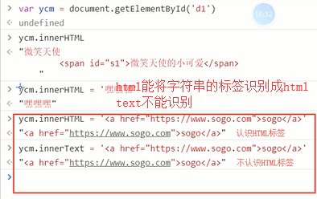
设置文本节点的值：
var divEle = document.getElementById("d1")
divEle.innerText="1"
divEle.innerHTML="<p>2</p>" #能识别成一个p标签
attribute操作
var divEle = document.getElementById("d1");
divEle.setAttribute("age","18") #比较规范的写法
divEle.getAttribute("age")
divEle.removeAttribute("age")
// 自带的属性还可以直接.属性名来获取和设置，如果是你自定义的属性，是不能通过.来获取属性值的
imgEle.src
imgEle.src="..."
获取值操作
语法：
elementNode.value
适用于以下标签，用户输入或者选择类型的标签：
1.input
2.select
3.textarea
var iEle = document.getElementById("i1");
console.log(iEle.value);
var sEle = document.getElementById("s1");
console.log(sEle.value);
var tEle = document.getElementById("t1");
console.log(tEle.value);
例如：页面上有下面三个标签
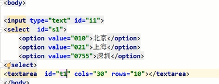
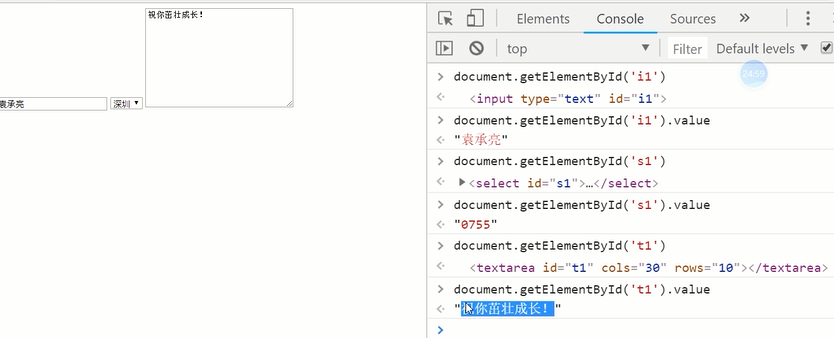
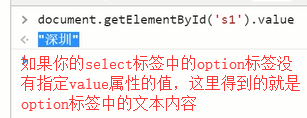
class的操作
className 获取所有样式类名(字符串)首先获取标签对象
标签对象.classList.remove(cls) 删除指定类
classList.add(cls) 添加类classList.contains(cls) 存在返回true，否则返回falseclassList.toggle(cls) 存在就删除，否则添加，toggle的意思是切换，有了就给你删除，如果没有就给你加一个
例如：我想将c2的类加到class里面去
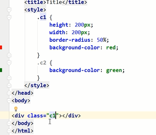
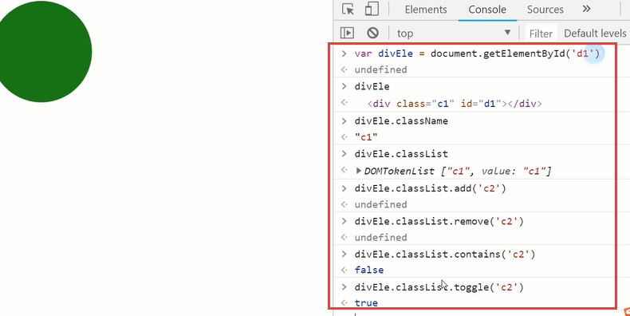
指定CSS操作
obj.style.backgroundColor="red"
JS操作CSS属性的规律：
1.对于没有中横线的CSS属性一般直接使用style.属性名即可。如：
obj.style.margin
obj.style.width
obj.style.left
obj.style.position
2.对含有中横线的CSS属性，将中横线后面的第一个字母换成大写即可。如：
obj.style.marginTop
obj.style.borderLeftWidth
obj.style.zIndex
obj.style.fontFamily
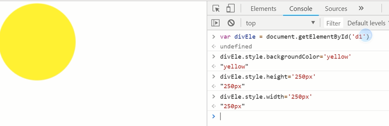
我们上面所说的这些修改样式的方法，是不是应该应用在用户的某些操作上啊，如果你用户点击了某个内容，让它变变颜色之类的，给用户一些好看的效果或者指示的效果啊，所以这就要和我们下面要学的事件结合起来要做的事情，通过事件+上面的样式修改来实现。
事件
HTML 4.0 的新特性之一是有能力使 HTML 事件触发浏览器中的动作（action），比如当用户点击某个 HTML 元素时启动一段 JavaScript。下面是一个属性列表，这些属性可插入 HTML 标签来定义事件动作。
常用事件(就先讲一下onfocus，onblur，onclick，onchange吧，其他的回头再说~~)
onclick 当用户点击某个对象时调用的事件句柄。
ondblclick 当用户双击某个对象时调用的事件句柄。
onfocus 元素获得焦点。 // 练习：输入框
onblur 元素失去焦点。 应用场景：用于表单验证,用户离开某个输入框时,代表已经输入完了,我们可以对它进行验证.
onchange 域的内容被改变。 应用场景：通常用于表单元素,当元素内容被改变时触发.（select联动）
onkeydown 某个键盘按键被按下。 应用场景: 当用户在最后一个输入框按下回车按键时,表单提交.
onkeypress 某个键盘按键被按下并松开。
onkeyup 某个键盘按键被松开。
onload 一张页面或一幅图像完成加载。
onmousedown 鼠标按钮被按下。
onmousemove 鼠标被移动。
onmouseout 鼠标从某元素移开。
onmouseover 鼠标移到某元素之上。
onselect 在文本框中的文本被选中时发生。
onsubmit 确认按钮被点击，使用的对象是form。
绑定方式：
方式一：（已经不常用了，多数用方式二了）
<div id="d1" onclick="changeColor(this);">点我</div>
<script>
function changeColor(ths) {
ths.style.backgroundColor="green";
}
</script>
注意：
this是实参，表示触发事件的当前元素。
函数定义过程中的ths为形参。
方式二：
<div id="d2">点我</div>
<script>
var divEle2 = document.getElementById("d2");
divEle2.onclick=function () { //console.log(this)
this.innerText="呵呵"; #哪个标签触发的这个事件，this就指向谁
}
</script>
注意一个问题：
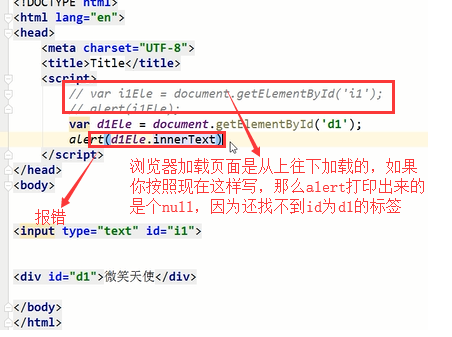


还有一种解决办法就是将script标签写到body标签最下面
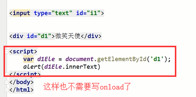
结合计时器的事件示例，input框里面动态显示时间:
<!DOCTYPE html>
<html lang="en">
<head>
<meta charset="UTF-8">
<meta http-equiv="x-ua-compatible" content="IE=edge">
<meta name="viewport" content="width=device-width, initial-scale=1">
<title>定时器</title>
<script> //当js代码中有找标签的操作的时候，别忘了页面加载的时候的顺序，以防出现找不到标签的情况出现，我们可以将这个script标签放到body标签最下面，或者用window.onload，这里我没有放，你们练习的时候放到下面去
var intervalId; //用来保存定时器对象，因为开始定时器是一个函数，结束定时器是一个函数，两个函数都是操作的一个定时器，让他们互相能够操作这个定时器，就需要一个全局变量来接受一下这个对象
//把当前事件放到id为i1的input标签里面
function f() {
var timeStr = (new Date()).toLocaleString(); // 1.拿到当前事件
var inputEle = document.getElementById("i1");// 2.获取input标签对象
inputEle.value = timeStr; //3.将事件赋值给input标签的value属性
}
//开始定时任务
function start() {
f();
if (intervalId === undefined) { //如果不加这个判断条件，你每次点击开始按钮，就创建一个定时器，每点一次就创建一个定时器，点的次数多了就会在页面上生成好多个定时器，并且点击停止按钮的时候，只能停止最后一个定时器，这样不好，也不对，所以加一个判断
intervalId = setInterval(f, 1000);
}
} //结束定时任务
function end() {
clearInterval(intervalId); // 清除对应的那个定时器
intervalId = undefined;
}
</script>
</head>
<body>
<input type="text" id="i1">
<input type="button" value="开始" id="start" onclick="start();">
<input type="button" value="结束" id="end" onclick="end();">
</body>
</html>
事件示例：
搜索框示例：
<!DOCTYPE html>
<html lang="en">
<head>
<meta charset="UTF-8">
<title>搜索框示例</title>
</head>
<body>
<input id="d1" type="text" value="请输入关键字" onblur="blur()" onfocus="focus()">
<script>
function focus(){ //如果在标签中写的blur()等方法，没有传入this参数，那么我们就需要自己来获取一下这个标签，例如下面的getElementById('d1')
var inputEle=document.getElementById("d1");
if (inputEle.value==="请输入关键字"){
inputEle.value=""; //inputEle.setAttribute('value','')
}
}
function blur(){
var inputEle=document.getElementById("d1");
var val=inputEle.value;
if(!val.trim()){
inputEle.value="请输入关键字";
}
}
</script>
</body>
</html>
select联动：选择省份，自动列出所有的城市，例如：选择河北省就显示河北省所有的市
<!DOCTYPE html>
<html lang="zh-CN">
<head>
<meta charset="UTF-8">
<meta http-equiv="x-ua-compatible" content="IE=edge">
<meta name="viewport" content="width=device-width, initial-scale=1">
<title>select联动</title>
</head>
<body>
<select id="province">
<option>请选择省:</option>
</select>
<select id="city">
<option>请选择市:</option>
</select>
<script>
data = {"河北省": ["廊坊", "邯郸"], "北京": ["朝阳区", "海淀区"], "山东": ["威海市", "烟台市"]};
var p = document.getElementById("province");
var c = document.getElementById("city");
//页面一刷新就将所有的省份都添加到select标签中
for (var i in data) {
var optionP = document.createElement("option"); //创建option标签
optionP.innerHTML = i; //将省份的数据添加到option标签中
p.appendChild(optionP);//将option标签添加到select标签中
} //只要select中选择的值发生变化的时候，就可以触发一个onchange事件，那么我们就可以通过这个事件来完成select标签联动
p.onchange = function () { //1.获取省的值
var pro = (this.options[this.selectedIndex]).innerHTML;//this.selectedIndex是当前选择的option标签的索引位置，this.options是获取所有的option标签，通过索引拿到当前选择的option标签对象，然后.innerHTML获取对象中的内容，也就是省份
//还可以这样获取省：var pro = this.value; var citys = data[pro]; //2. 通过上面获得的省份去data里面取出该省对应的所有的市
// 3. 清空option
c.innerHTML = ""; //清空显示市的那个select标签里面的内容
//4.循环所有的市，然后添加到显示市的那个select标签中
for (var i=0;i<citys.length;i++) {
var option_city = document.createElement("option");
option_city.innerHTML = citys[i];
c.appendChild(option_city);
}
}
</script>
</body>
</html>
window.onload
当我们给页面上的元素绑定事件的时候，必须等到文档加载完毕。因为我们无法给一个不存在的元素绑定事件。
window.onload事件在文件加载过程结束的时候触发。此时，文档中的所有对象都位于DOM中，并且所有图像，脚本，链接和子框架都已完成加载。
注意：.onload()函数存在覆盖现象。